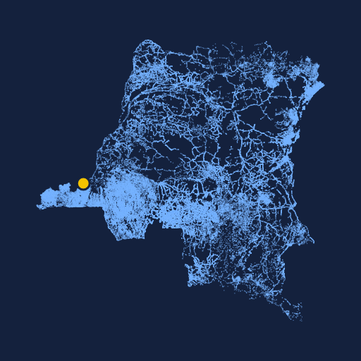
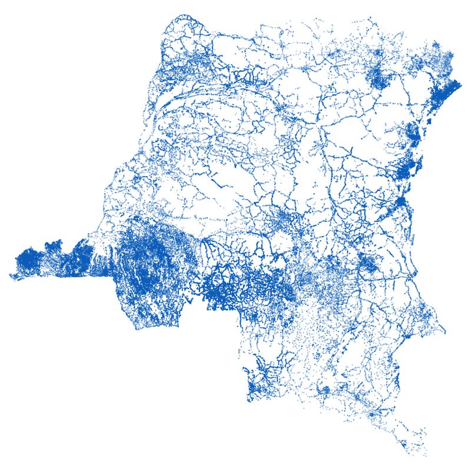

RDC LocalitésLe découpage administratif complet du pays, gratuit et ouvert. Choisissez un lieu ci-dessous : chaque étape est une simple requête à l'API.

Commencez par une province.
Dernière requête envoyée à l'API
GET api/v1/provinces.json
Pas de clé, pas de compte, pas de limite. Des fichiers JSON servis tels quels.
GET /api/v1/provinces.json
GET /api/v1/provinces/{id}.json
GET /api/v1/territoires-villes/{id}.json
GET /api/v1/communes-secteurs-chefferies/{id}.json
GET /api/v1/groupements-quartiers/{id}.json
La connexion coûte cher ? Embarquez toute la base dans votre application.
Un village manque, un nom est mal écrit ? Signalez-le, même sans savoir coder.